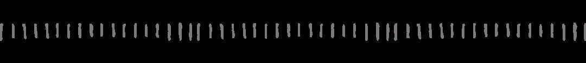

哦豁！你是这样的视觉组！
技术部招新刚刚结束
不知道你们报了哪个部门呢
为了让大家有更深的了解
我们特地采访了视觉组的学长
为大家带来了视觉组的情报
一起来看一下吧

视觉组是技术部的一部分，主要负责一些装甲板的识别，相当于写自瞄，击打对方，还有负责能量机关的识别与开启并且辅助电控研发自动机器人。
看到这有人会问
“那他们是不是机器人的眼睛啊？”
其实这个理解并不完全准确
因为他们就像是“开了挂”的眼睛
视野囊括赛事全局
那”上帝视角“平时工作有什么呢？
其实呢，视觉组的小伙伴们主要利用C++进行开发、学习opencv，然后还得要跟电控组进行联调，所以也要学一些通信知识，当然了，进阶版的就要学习一些关于神经网络的知识啦。
就像生活不总是一帆风顺
加入这个大家庭肯定是会遇到难题滴
首先要学会使用Linux系统，配环境也和Windows不一样。
其次，遇到程序报错，需要自己排查是代码问题，还是环境问题，又或是硬件的问题。
作为刚学习视觉方面来说，先在Windows环境上学习，主要是要注意自己的代码逻辑，逻辑问题是最难排查的。
不过新来的小伙伴不用担心哈，耐心的小哥哥小姐姐们会亲自教学，解答你们每一个问题。
另外，我们还打听到学长为新人准备了很多秘密资料哦！而且机器视觉是以后计算机考研的一个方向，现在积累一些，肯定是有很大好处的！

看到这里
你不会认为小伙伴们只会埋头敲代码吧
其实平时的工作并不会枯燥
与志同道合的好朋友攻克难题找bug
简直不要太爽
另外干饭、开黑、打篮球也是他们的最爱哦
大家都是有乐趣的孩子
（ps：加入我们，大佬带你起飞鸭！）
最后看看陶涌学长有什么对新入门的孩子们说的吧

坚持下去，最初肯定是有点累，坚持到后面就觉得轻松了，也就那么回事，别让自己后悔就行，希望大家踊跃参加，来电协学技术哦。
排版：王海彬